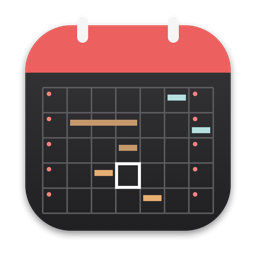
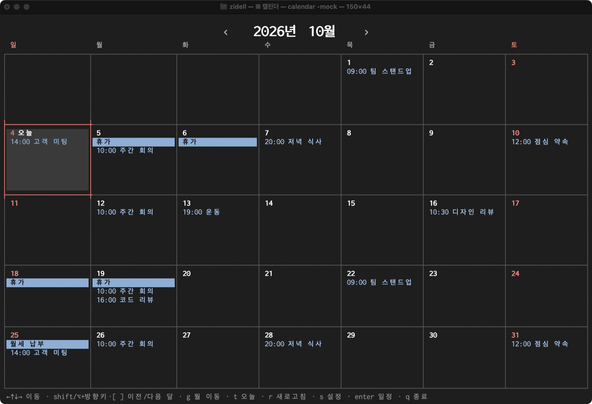

단축키Shortcuts | GitHub | English

calendar-tui터미널용 캘린더A calendar for the terminal
TUI상에서 간단하게 쓸 목적으로 개발했다. 맥에선 시스템에 설정된 iCloud/Google 캘린더를 그대로 쓰거나 구글에 직접 로그인하고, 윈도우에선 구글 캘린더에 직접 로그인한다. Built for simple use in a TUI. On a Mac it uses the iCloud/Google calendars set up in your system or signs in to Google directly; on Windows it signs in to Google Calendar.
macOS
curl -fsSL https://zidell.github.io/calendar-tui/install.sh | bash
macOS 14 이상 · Apple Silicon·Intel · 설치 후 터미널에서 calendar-tui를 실행한다. 같은 명령으로 업데이트한다.
macOS 14+ · Apple Silicon & Intel · Then run calendar-tui in your terminal. Run the same command to update.
Windows (PowerShell)
irm https://zidell.github.io/calendar-tui/install.ps1 | iex
Windows 10·11 · x64·ARM64 · 새 터미널(Windows Terminal 권장)에서 calendar-tui를 실행한다. 같은 명령으로 업데이트한다.
Windows 10/11 · x64 & ARM64 · Then run calendar-tui in a new terminal (Windows Terminal recommended). Run the same command to update.

| ← ↑ ↓ → | 하루 · 한 주 이동Move by day / week |
| [ ] | 이전 · 다음 달(주)Previous / next month (week) |
| Enter | 그날 일정 목록That day's events |
| a · / · v | 빠른 추가 · 검색 · 보기 바꾸기Quick add · search · switch view |
| g · t · s | 월 이동 · 오늘 · 설정Go to month · today · settings |
| esc · q | 창 닫기(취소) · 종료Close window (cancel) · quit |
~/.local/bin/calendar-tui와 ~/Library/Application Support/calendar-tui, 윈도우는 %LOCALAPPDATA%\Programs\calendar-tui와 %APPDATA%\calendar-tui를 지운다. 구글 로그인은 먼저 calendar-tui --logout.To uninstall, delete ~/.local/bin/calendar-tui and ~/Library/Application Support/calendar-tui on a Mac, or %LOCALAPPDATA%\Programs\calendar-tui and %APPDATA%\calendar-tui on Windows. Run calendar-tui --logout first if you signed in to Google.소스에서 빌드하려면(Go, 맥은 Xcode 커맨드라인 도구도 필요):To build from source (needs Go, plus the Xcode Command Line Tools on a Mac):
git clone https://github.com/zidell/calendar-tui.git cd calendar-tui && go build -o calendar-tui . && mv calendar-tui ~/.local/bin/
소스 빌드엔 구글 OAuth 클라이언트가 들어 있지 않다. 구글 로그인을 쓰려면 Cloud 콘솔에서 만든 데스크톱 앱 클라이언트 JSON을 설정 폴더에 google_client.json으로 둔다.Source builds have no Google OAuth client. To use Google sign-in, put a desktop-app client JSON from Cloud Console in the settings folder as google_client.json.